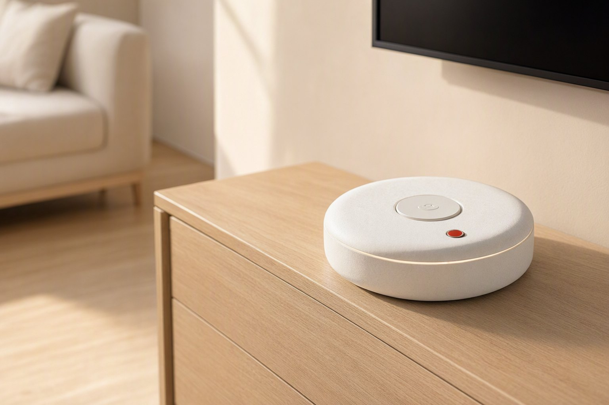
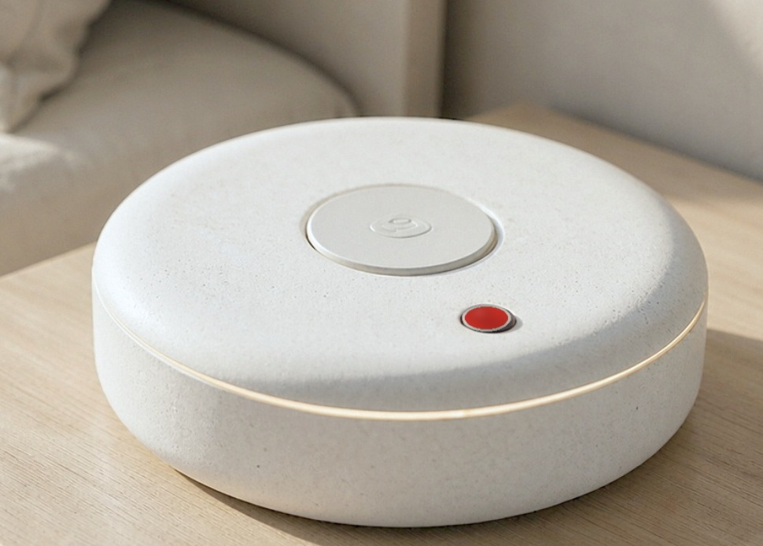
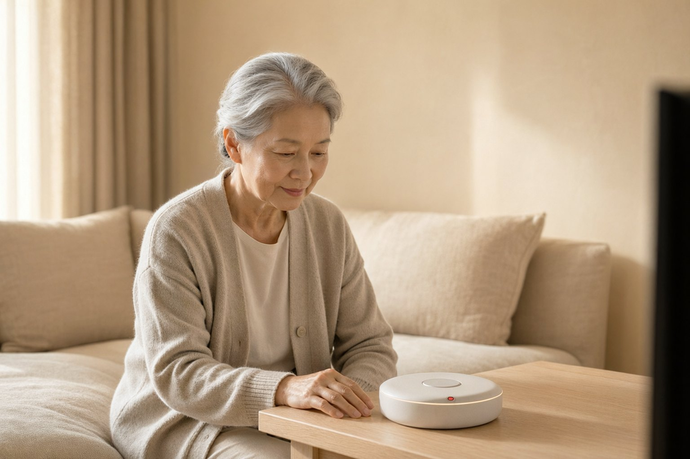
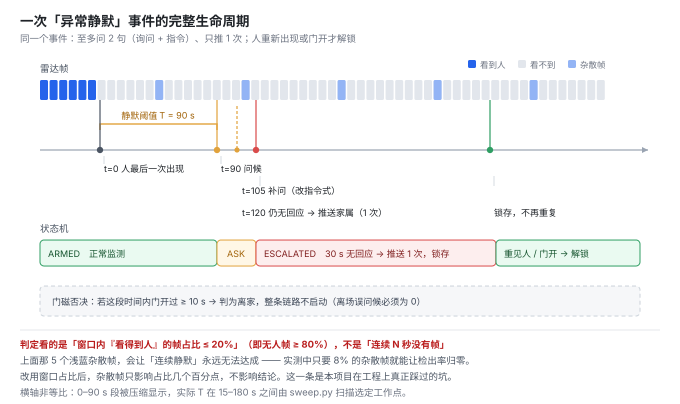
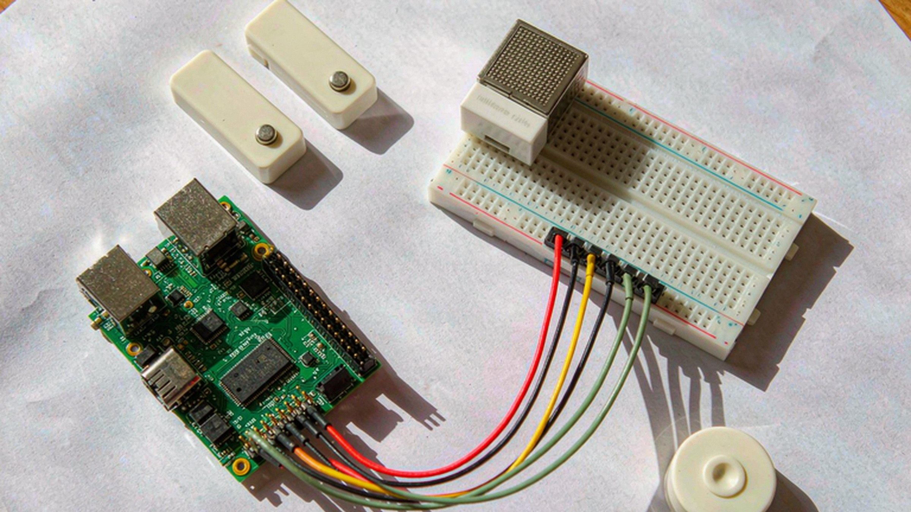
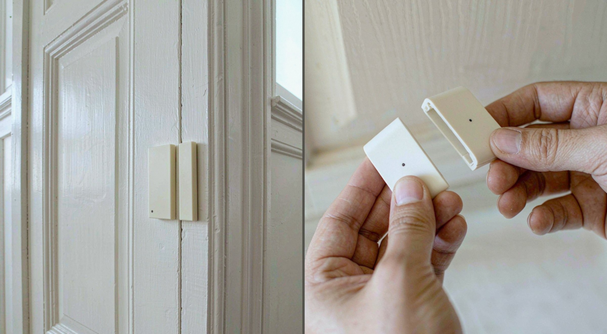
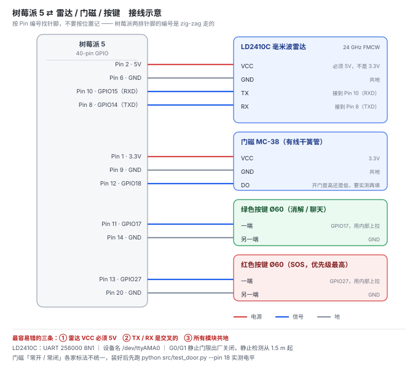
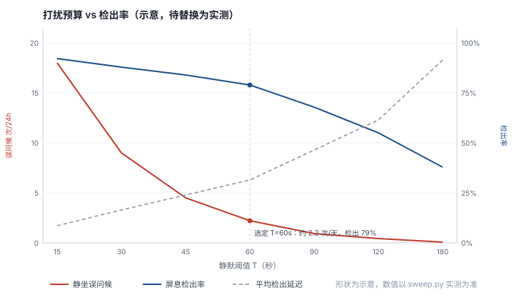

01 / SILENT ABSENCE
2分钟 / MIN
人从雷达里消失，门没开
先开口问一句，无人应答再升级。

场景示意 · 非安装位置 · AI 生成
先开口问一句，无人应答再升级。
每日点名兜底，不让沉默持续太久。
状态回执缺失，家属当天可发现。
以上为设计目标，非硬件实测。2 分钟 / 13 小时为逻辑推算，基于推荐摆位与默认参数；实际定义见「验证边界」页。
设计承诺 / DESIGN PROMISE
它给出的不是准确率，而是一个有时间上限的承诺：最坏情况下，多久一定有人知道。
先开口问一句，无人应答再升级。
每日点名兜底，不让沉默持续太久。
状态回执缺失，家属当天可发现。
以上为设计目标，非硬件实测；2 分钟 / 13 小时为逻辑推算，基于推荐摆位与默认参数，实际以整机联调为准。定义见仓库文档与「验证边界」页。
概念片 / FILM · 01:01
从雷达发现异常、门磁判断出门，到老人拍一下按键、红色 SOS 优先呼救——61 秒，看完它的完整逻辑。
FRAME 01 / 61 SEC
概念片 · AI 生成，非实物拍摄；片中按键交互为动画演示，不代表硬件实测。
为什么做 / WHY
出事不可控，被响应取决于被发现。我们只插进中间那一环：把「没人知道」变成「有人知道」——不做急救、不做诊断、不做预测。
市面上很多设备不是坏掉的，是被老人嫌烦拔掉的。
所以本项目不参加「识别率」竞赛，换一个目标函数：在「每天最多打扰 N 次」的约束下，能检出几成、延迟多少。报警之前先问一句、等 30 秒、给老人一个说「我没事」的机会——这一层不需要更贵的传感器，只需要一个按键和一套状态机。存在传感器 / 智能家居联动件，没有任何安全判断。
存在感知 + 跌倒识别 + 对讲，中间没有「先问一句」。
雷达 + 门磁 + 两个按键 + 每日点名，做报警前的确认层。
竞品价位为 2025 年 10 月电商页面价，仅作参照；背景数据引自仓库 docs/项目策划书.md 与 README 参考。
产品体验 / EXPERIENCE
没有屏幕，只有两个按键：确认，和 SOS。

01 — 外观
米灰色磨砂机身，不拍照、不显示。中间是确认键，右下是红色 SOS 键。
02 — 使用
老人按一下确认键，就表示“我没事”。红色 SOS 用于主动求助，不用先等设备来问。

产品 3D 概念模型 · 拖动旋转，非工程扫描
03 — 3D
按第二张实物图做的 3D 概念模型；机身、确认键、红色 SOS 都是几何建模，不使用按键贴图。可拖动旋转，非工程扫描。
拖动旋转，点按按键试试：界面演示，不代表硬件实测。
04 — 按键与预留件
老人不用 App，子女不需要装任何东西。当前版本已实现的人机通道只有两个按键 + 扬声器；屏幕与指示灯留了位置，但代码尚未驱动。
| 部件 | 规格 / 位置 | 作用 | 当前状态 |
|---|---|---|---|
| 确认键 | Ø60 自复位 · 采购为绿色 | 问候时按＝「我没事」；平时按＝想聊天 | 逻辑已实现 · 硬件待实测 |
| SOS 键 | Ø60 自复位 · 红色，优先级最高 | 任何时候按下立刻本地播报并尝试推送（须 --pin-sos） | 逻辑已实现 · 硬件待实测 |
| 0.96" OLED | SSD1306 · 顶盖前部 | 规划显示一句状态 | 预留 · 代码未驱动，装了也不亮 |
| 指示灯 ×2 | 按键左右 | 规划问候时缓慢呼吸 | 预留 · 代码未实现 |
页面概念图与 3D 模型为设计示意配色；实物按键颜色与尺寸以 hardware/采购申请单.md 为准（绿 / 红各一，Ø60）。「无屏幕」是当前事实，不是宣传口径。
下一步：看它怎么工作。
了解产品机制 →产品机制 / MECHANISM
先看，再问，等一个按键；没人回应，才找家属。
不拍照、不录音，只判断屋里有没有人、门有没有开。
毫米波雷达感知有没有人、动不动；门磁记录门开没开。
它不会因为一次没动静就报警，会先看是不是一段时间都不对劲。
没有异常，就不打扰。
设备主动语音播报：先问，不直接报警。
扬声器播放预录语音；老人按一下确认键就能回应。
如果一段时间没有正常活动，它会问：“您还好吗？按一下手边的键。”
在老人回应之前，家属端不会收到消息。
它说的是“状态待核实”，不是“出事了”。
Wi-Fi 通信（设计）。
再提醒一次；仍然没有回应，就把这件事标成“待家属核实”。
家属端显示“状态待核实”，请先打电话确认；通知链路待联调。
不用等设备来问。
红色 SOS 实体按键（硬件待实测）。
本地先响，同时尝试通知家属；本地呼救和远程通知是两条独立链路。
远程通知未联调前，不保证一定送达。
陪聊是附加功能，不参与安全判断。
USB 麦克风（演示用，尚未装配）。
离线识别和大模型对话链路已在代码中打通；模型还没装。
家属端看不到聊天内容；语音不参与异常判断。
默认参数 / DEFAULTS
以下为 src/guardian.py 的产品默认值（演示另用缩短参数：mock_run 剧本 20 s、demo_keyboard 12 s）。文档与代码不一致时，以代码为准。
窗口须基本填满（≥90%）才判定；mock_run 剧本 20 s、键盘演示 12 s。
窗口内「看得到人」的帧占比低于此值（即无人帧 ≥ 80%），不是连续 N 秒没帧。
从第一句起算；补问不会把 30 秒拖成 45 秒。
第一句是询问，第二句是命令——对听力差、反应慢的老人是两句不同的话。
必须小于 T，否则问候会抢在门磁前面。
拿一次快递，不该让系统误判一整天。
不是永久免疫：安静期过后仍看不到人，还是要再问一次。
锁存直到重新看到人或门开；再问也不会有新信息，只会变成骚扰。
收不到任何帧判「设备异常」，不判「人消失」——线松了不该报失踪。
防自激；按每句录音实际时长冻结，不用拍出来的常数。
迟迟看不到人就提示摆位，而不是安静地什么都不做。
按当天时间算，重启不推后；点名升级后锁存 30 min。
一次事件 / LIFECYCLE
这张图是答辩时最好讲的一张：同一个事件至多问 2 句、只推 1 次；人重新出现或门开才解锁。

它真的会说的话 / VOICE
全部为 16 kHz 单声道 WAV，已入库 audio/。安全路径 strict=True：本地文件缺失时只打印、不偷偷联网合成；点名缺 checkin.wav 会自动退回 ask.wav，不会变成哑巴。
此处为网页试听，不代表硬件出声已验证；扬声器链路待整机实测。语音素材状态与换录流程见 audio/README.md。
另一条兜底 / DAILY CHECK-IN
每天 9:00 和 20:00，设备会主动问一句。老人按一下确认键，就给家属发一条「今日平安」；没有回应，才进入上面的核实流程。
设计值，不是硬件实测；它和异常升级是两条不同的路径。点名依赖老人愿意按：明确拒绝按的老人，它会退化成「每天两次提醒家属」的设备——这一条要提前跟家属说清楚。
想先看它用什么做的？
看硬核技术 →硬核技术 / TECHNOLOGY
硬件、判断和连接，不堆参数。

01 — 硬件
树莓派负责本地判断与音频播放；LD2410C 只提供目标存在与运动信息。
摆放建议：2–4 m、高 60–90 cm；本方案默认关闭 0–1.5 m 的静止门限，静止检测实际从 1.5 m 起；床头柜 / 茶几不适合。
02 — 门磁
门磁只能检测门体开合，不能单独确认老人是否外出；它为居家状态判断提供辅助信息。

规格 / SPEC
原型阶段：主控复用实验室已有的树莓派 5，本次只申请外围器件。所有连接为杜邦线插接，不需要焊接。
| 项 | 值 | 说明 | 状态 |
|---|---|---|---|
| 主控 | 树莓派 5 | 状态机 / 语音 / 本地判定，复用已有 | 原型 |
| 感知 | HLK-LD2410C · 24 GHz FMCW | UART 256000 8N1 · 约 10 帧/秒 · 9 个距离门 × 0.75 m | 待实测 |
| 门磁 | MC-38 有线干簧管 · GPIO18 | 只记录开合；开门是高还是低，实测后再设 OPEN_LEVEL | 待实测 |
| 交互 | Ø60 自复位按键 ×2 | GPIO17 确认 / GPIO27 SOS，内部上拉 | 逻辑已实现 |
| 显示 | 0.96" OLED / 指示灯 ×2 | 预留位置，代码未驱动 | 明确不采购 |
| 外壳 | ABS 150×100×70 · 透明盖 | 70 mm 高才容得下 Ø60 按键与走线 | 待装壳 |
| 功耗 | 约 3–5 W | 整机含树莓派；接音箱建议 5V/5A 电源 | 估算 |
| 网络 | 仅推送与可选陪聊 | 安全判定与安全播报不依赖网络 | 设计 |
接线 / WIRING
树莓派两排针脚的编号是 zig-zag 走的。下图为仓库原图 hardware/wiring.svg，含三条最容易错的接法。

dtparam=uart0_console：那行会把串口变成登录控制台，正好占掉你要用的口，程序会一直报「设备被占用」。Pi 5 上 GPIO 已移到 RP1 芯片，RPi.GPIO 会直接崩。摆位 / PLACEMENT
LD2410 共 9 个距离门、每门 0.75 m；G0（0–0.75 m）与 G1（0.75–1.5 m）的静止门限出厂为 0，即关闭。所以静止检测实际从 1.5 m 起。
| 位置 | 到常坐位置的距离 | 判定 |
|---|---|---|
| 电视柜 / 餐边柜 / 书架 | 2–3 m · 高 60–90 cm | 推荐 |
| 沙发侧后方边几 | 1.5–2 m | 可用，需标定 |
| 茶几 | 0.8 m | 不可用 |
| 床头柜 | 0.5 m | 不可用 |
| 空调出风口下 / 窗帘旁 / 风扇正对 | — | 不可用 |
03 — 系统架构 · 设计
虚线节点为设计架构，尚未完成真实通信、后端处理与消息推送联调。
雷达只判断有没有人、动不动；门磁只记录门开合。没有摄像头。
状态机在树莓派上运行；安全播报用本地预录音频，设计上断网也能播。
陪聊和远程通知才需要网络；安全判定不依赖云。
成本 / COST
「120 元的盒子」不含主控，读者会当成整机价。所以这里把增量、DIY 整机、量产整机三笔账分开列，混着说就是虚报。
外围器件 132 元 + Ø60 金属开孔器 25 元。树莓派 5 与存储卡由实验室提供 / 自备，不在此列。单价按电商上限估，便于报销留余量。
USB 全向麦克风 40 元（仅用于对话演示，安全功能不需要）+ 5V/5A 电源 99 元。含可选项合计 296 元。
主控 55 + 功放 8 + 喇叭 6 + 雷达 30 + 门磁 5 + 按键 20 + 外壳 15 + 杂项 10。这是整机，不是增量，不能与左边相加。主控必须 N16R8。
| 口径 | 金额 | 含什么 / 不含什么 |
|---|---|---|
| 外围器件增量 | 约 100–150 元 | 雷达 + 门磁 + 按键 + 外壳 + 音箱 + 辅料。策划书细算 90–130、README 取 120、采购单按上限报 157，是同一笔账的三种精度。不含主控。 |
| DIY 整机（树莓派 5） | 约 720 元 | 增量 + 树莓派 5 + 存储卡 + 电源。当前原型形态，用于验证逻辑，不是量产成本。 |
| 量产整机（ESP32-S3） | 约 150 元 | 换主控后的整机估算。尚未采购、尚未移植，属设计估算。 |
| 市场锚点 | 价格 | 含义 |
|---|---|---|
| 政府采购中标清单 | 多功能毫米波雷达 550 元/台 | 什邡市民政局居家适老化改造项目，2026-08，中国政府采购网。含安装、平台与运维的整机采购价；同清单 SOS 一键呼叫 150 元、智能语音屏 430 元。 |
| 电商国产 24GHz 雷达模块 | 150–400 元 | 裸模块，不含算法与外壳。 |
| 电商成品整套 | 最高约 1800 元 | 含跌倒算法与 App。 |
金额引自 hardware/采购申请单.md、docs/项目策划书.md 第六节、docs/ESP32迁移指南.md 第二节。竞品只给区间不点型号单价：型号迭代快，写死一个数字容易被当场查证对不上。
打扰预算 / BUDGET
同一个阈值同时决定三件事：静坐时被打扰几次、真出事时能不能发现、多久才发现。把 T 从 15 s 扫到 180 s，三条曲线一起看，才能选工作点。

src/sweep.py 扫描后选定。
放大查看 ↗
python src/capture.py --label sit --minutes 5python src/capture.py --label breathhold --minutes 3 --event-at 20python src/sweep.py data/guardian.csv --ts 15,30,45,60,90,120,180python tools/plot_sweep.py sweep_result.csv --mark 90data/_synthetic_demo.csv 与 data/_synthetic_sweep_result.csv 是为跑通流程造的假数据，跑出来的「检出 100% / 误问候 0 次」没有意义。真实采集写入 data/guardian.csv，扫描结果落在仓库根目录 sweep_result.csv。AI 分层 / WHERE THE AI IS
这不是「没有 AI」，是给 AI 划了边界：一半是可以逐行验证的边缘规则，一半是不参与安全的云端模型。
| 层 | 用什么 | 负责什么 | 挂了会怎样 |
|---|---|---|---|
| 边缘判定层 | 滑动窗口占比 + 门磁排除 + 按键消解的状态机 故意不用机器学习 |
静默判定、问候、升级推送、每日点名。全部在树莓派本地跑。 | 这一层就是安全本身，不存在「挂了还能救」的说法；所以它必须可读懂、可现场逐行验证。 |
| 云端陪聊层 | 本地 Vosk 离线小模型转文字 → deepseek-chat 理解意图与情绪 → 合成语音播出 |
只负责老人按键后的倾诉与回应。识别结果全程不参与静默判定与告警升级。 | 断网、模型答错、服务不可用，都不影响设备把人救出来。最多是聊得不好。 |
拿不到真实衰弱老人的训练数据。用健康年轻人的数据训出来的模型，在这个人群上不可靠。
漏报是一条命，误报是一次骚扰。两种错的代价不在一个量级，需要每条判定都能被读懂、能在现场逐行验证。
在同一颗 25 元的雷达上跑模型，只增加功耗和不可解释性，不增加信息量。
两种形态 / FORM FACTOR
量产形态已经写清买什么、接什么、改什么，但现在不做：两套代码并行维护，会让当前阶段的交付先崩。下面这张表是迁移的代价，必须写进边界。
| 能力 | 树莓派 5（当前） | ESP32-S3（量产） | 怎么处理 |
|---|---|---|---|
| 离线连续语音识别 | Vosk 可用 | 装不下（模型 40 MB+） | 换 ESP-SR 命令词识别（「我没事」「不舒服」「救命」），或录音上传云端 ASR |
| 本地 TTS | edge-tts 可用 | 不可用 | 回复改云端 TTS，或只播预录 + 固定回复 |
| 板上跑 sweep | 可以 | 不做 | 原始 CSV 通过 WiFi 传回电脑，分析仍在电脑上 |
| 每日点名的时刻 | NTP | NTP，断网就漂 | 加 DS3231（约 5 元），或接受断网时不精确 |
| 安全路径依赖网络 | 否 | 否（更好） | 本地 WAV + 本地判定，断网完全不影响 |
主控必须 ESP32-S3-DevKitC-1 N16R8（16 MB flash + 8 MB PSRAM），N8R2 存不下音频与后续模型；功放用 MAX98357A（I2S），不要买 PAM8403（模拟输入，需要 DAC）。详见 docs/ESP32迁移指南.md。
下一步：看它验证到哪一步，或者它是怎么工作的。
验证与边界 / BOUNDARY
哪些已经做到，哪些还在验证，哪些明确不做。
验证状态
状态机、协议解析、升级锁存已存在于仓库代码中。
同一次异常事件只升级一次，有回归测试保护。
雷达、门磁、按键与音频尚未完成接线核验。
通信、后端处理与消息推送链路尚未联调。
代码存在 ≠ 软件回归 ≠ 硬件实测 ≠ 整机联调。指标定义与回归记录见 GitHub 仓库 docs/。
指标表 / METRICS
目标值现在就写死，实测值等硬件到货后逐项回填。最后一行「跌倒检出：不支持」故意保留——留着它，前面几行才不是宣传。
| 指标 | 目标 | 实测 | 测法 |
|---|---|---|---|
| 静默检出延迟 | ≤ T + 5 s | 待填 | mock / sweep |
| 正常静坐误问候 | ≤ 2 次 / 24 h | 待填 | sweep |
| 开门离场误问候 | 0 | 待填 | sweep |
| 屏息检出率 | ≥ 80% | 待填 | sweep |
| 消解成功率 | ≥ 95%（问候后 30 s 内按键） | 待填 | 真机统计 |
| 升级重复次数 | 1 | 待填 | mock_run 回归 |
| 连续运行 | ≥ 24 h 无崩溃、无内存增长 | 待填 | 压测 |
| 启动自检 | 上电 60 s 无人 → 提示 | 待填 | 真机 |
| 最长无人知晓时间（人在场） | ≤ 13 h | 13 h · 逻辑算得，非实测 | mock_run 点名回归 |
| 点名检出率 | 100% · 逻辑保证，不依赖雷达 | 逻辑必然 | mock_run 回归 |
| 点名误打扰 | 2 次 / 天，可预期 | 待填 | 真机 |
| 语音识别参与安全判定 | 否（仅陪聊） | 否 · 代码保证 | 代码审查 |
| 跌倒检出 | 不支持 | — | — |
可复现的证据 / EVIDENCE
下面这段录屏是 src/mock_run.py 的真实终端输出：虚拟时钟跑完整剧本，约 3 秒出结果。它证明的是逻辑与协议，不是硬件。
录屏为真实运行输出，无剪辑配音；末尾可见「统计: 问候 4 次 / 推送 1 次 / 对话 1 次」与「回归测试: PASS」。原视频无有效音轨，已去除声音。
python src/mock_run.pypython src/selftest.pypython src/preflight.pypython src/demo_keyboard.py --no-gpio --no-audiocheckin_ok 事件真的推出去——「今日平安」只计数不发送，会被回归直接判 FAIL。功能状态清单
提供传感范围内的目标存在及运动信息，不作为健康或跌倒诊断依据。
采集门体开合事件，为居家状态判断提供辅助信息。
状态符合设定规则时启动待确认流程，结合语音与按键确认。
大尺寸实体按键，老人无需学习复杂操作。
扬声器播放预录语音，用于问候与引导确认。
设计拟通过周期性状态回执，辅助家属了解设备状态。
设计拟提示“状态待核实”，完整链路尚待联调验证。
本页面所列功能状态为当前阶段的临时核验标记，并不代表相关功能已经完成开发或通过测试。实际可用状态需结合项目源码、硬件实物接线、模块测试记录及整机联调证据逐项核实。代码存在、编译通过或模拟运行成功，均不代表硬件功能已经通过验证。
失效表现 / FAILURE MODES
所以它上电做一次自检，并且每 5 秒检查一次雷达心跳——收不到帧就报「设备异常」，而不是把「雷达坏了」当成「人消失了」。下面四种现象都有明确含义与处理动作。
| 现象 | 含义 | 处理 |
|---|---|---|
| 播「启动 60 秒仍未检测到人，请检查摆放位置与雷达朝向」 | 摆位不对，或雷达没连上（mock_run 剧本为 5 秒） | 挪到 2–3 m、高 60–90 cm，检查接线 |
| 播「设备好像有点问题，我让人来看看」 | 5 s 内收不到任何雷达帧 → 判设备异常，不是判人消失 | 查 UART：波特率 256000、TX/RX 交叉、共地 |
| 该问候时不问候 | 大概率摆太近（< 1.5 m），静止门限出厂关闭 | 见硬核技术页「摆位」表 |
| 反复问候坐着的人 | 同上，或灵敏度门限设反了 | 门限 100 = 该门完全不识别，数字越大越迟钝 |
标准、隐私与留痕 / COMPLIANCE
| 对象 | 是什么 | 本项目的口径 |
|---|---|---|
| MZ/T 238—2025 | 民政部推荐性行业标准，2025-02-28 发布、2025-05-01 实施 | 仅参照其功能框架设计，不覆盖其中的跌倒检测要求，不宣称符合 |
| 《人工智能拟人化互动服务管理暂行办法》 | 2026-07-15 施行 | 若对外提供拟人化情感陪伴服务，需履行标识、安全评估等义务。作为课程 / 研究原型不对外提供服务时通常不触发；演示文案不承诺任何医疗建议。 |
| 医疗器械 | 需输出可用于诊断的生理参数 | 不输出任何生理参数，不构成医疗器械，不用于医疗诊断 |
feishu/ 下四张 CSV（开发日志 / 任务进度 / 物料采购 / 指标验证）是 2026-11-04 的只读快照；2026-11-09 起已停止自动同步，飞书表内容不再随仓库变化。tools/feishu_sync.py 与 tools/feishu_export.py 已停用，不要再运行，否则会覆盖快照。要看最新进度，以仓库 docs/ 与提交记录为准。边界声明引自 docs/边界与指标.md 与 docs/项目说明书.md；失效表引自说明书第七节；合规提示引自 README。标准与法规信息为文档记录口径，正式对外表述前请再核对原文。
跌倒识别是另一条技术路线。更关键的是：人倒在地上但还在呼吸时，雷达仍可能判断“有人”，异常确认不会触发。每日点名是补这个盲区，不是跌倒检测。
不一定。可能受网络波动影响。家属收到状态待核实提示后，可通过电话等方式进一步确认。
不建议。本方案默认关闭 0–1.5 m 的静止门限；床头柜、茶几通常太近，容易漏掉躺着或坐着不动的人。建议放在 2–4 m 远、离地 60–90 cm 的位置，中间不要有柜门或墙壁遮挡。
一个房间。墙和门会挡住雷达，卫生间、厨房这些隔间是盲区。它不是全屋监护设备。
断电就停止工作，不能监护。断网只影响远程通知；本地预录语音设计上仍能播放。家属当天收不到“今日平安”回执，就能发现设备异常。
不会录像：没有摄像头。不会保存录音：问候是预录音频；语音陪聊是演示功能，聊天内容不参与安全判断，也不在设备里保存。
不能。它只做“先问一句、没人回应再通知家属核实”，不能替代电话确认、上门查看或 120。
雷达能看见“有人”，但看不见“人能不能动”。人倒在地上但还在呼吸时，它可能仍判断有人，异常确认不会触发。每日点名把这段盲区变成有上限的承诺：没有回应，才进入待核实。
按键是给老人的“确认权”，不是“义务”。他不按，就按没回应处理：第一次问候后 30 秒没按键，再问一次、语气更具体（“您按一下手边的键好吗”）；还不回应才推给家属。同一次静默最多问 2 次，问完就升级，不会一直追着问。但必须诚实说：“老人听见了却不按”是这个方案最大的未验证风险，只能靠真人试用才知道，文档里把它列为待测项，不是已经解决了。
分成两半：不参与安全的云端大模型，和可以逐行验证的边缘规则。边缘这一层故意没用机器学习——拿不到真实衰弱老人的训练数据、误判代价不对称（漏报是命、误报是骚扰）、在同一颗 25 元雷达上跑模型换不来可靠性。云端这一层是真的模型：本地转文字后进 deepseek-chat 做意图与情绪理解，只用于陪聊，挂了也不影响救人。严格说规则引擎不算 AI，是传统专家系统思路，所以不用“模型”这个词包装它。
因为是三笔不同的账，不能混着说。外围器件增量约 100–150 元（策划书细算 90–130、README 取 120、采购单按电商上限报 157，含 25 元开孔器），不含主控；DIY 整机约 720 元，含树莓派 5；换 ESP32-S3 的量产整机约 150 元，是整机不是增量。另外政府采购的多功能毫米波雷达中标价 550 元/台（含安装、平台与运维），已经低于 720 元的 DIY 成本——所以这个项目卖的不是“更便宜”，是“更清楚的承诺”。
不能。语音识别链路已通、模型未装，当前用键盘输入代替语音输入，识别模块是占位。装上 Vosk 中文小模型后也只用于陪聊，且有三条硬限制：5 秒定长录音、需相对安静、仅对标准普通话有效——方言、含糊发音、远距离讲话都会失败。识别结果全程不参与静默判定与告警升级，所以识别错了最多是聊得不好，不会漏救，也不会乱报警。这一条写在边界里，而不是演示时假装它能听懂。
想回看技术组成？
家属端
只呈现必要状态，减少打扰。界面为纯 HTML/CSS 概念设计。
点一下，切换两种概念状态
「老人较长时间未活动且未回应问候，建议致电确认。」
这是src/guardian.py 中 push_text 的原文，一字不改；同一次静默只推 1 次。推送只有一句文字，不含位置轨迹、不含录音、不含生理参数。PUSHPLUS_TOKEN 时只在本地打印 [PUSH] 并返回失败——此时设备只有本地语音提醒，绝不播报「已通知家属」。配置后也不只看 HTTP 200：PushPlus 的业务码非 200 一律判失败，重试 3 次仍失败则落盘 data/_push_failed.jsonl 供人工补发。checkin_ok 事件并真的推送（回归锁住），家属当天收不到「今日平安」，就知道设备可能被拔掉或坏了，该打个电话。子女不需要装任何 App。
看到“状态待核实”，先联系老人。
联系邻居，或上门看一眼。
直接拨打 120。